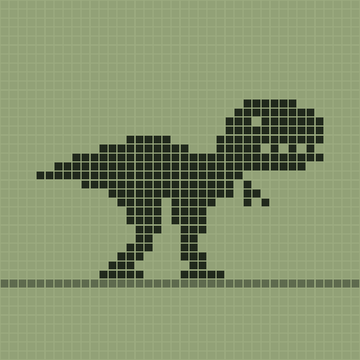
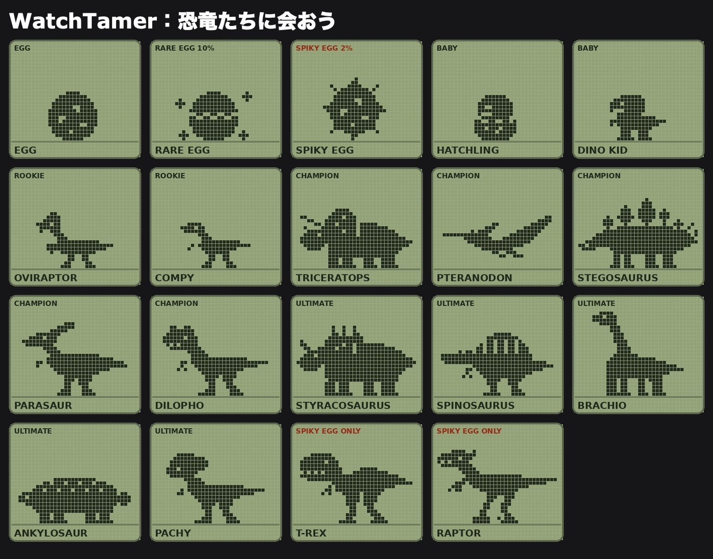

WatchTamer
Apple Watchで育てる、
Apple Watch
画像

できること
恐竜を育てる
卵をかえして、ごはんをあげて、フンをそうじして、成長していく姿をすべての段階で見守りましょう。
歩いてごはんとトレーニング
歩くだけでOKです。1,000歩ごとに恐竜にごはん、2,000歩ごとにプロテイン、3,000歩ごとにトレーニング1回になります。アプリを閉じているあいだも有効です。
トレーニングのストック
1日に5,000歩歩くごとに、トレーニングを1回分ためておけます（最大4回）。TRAINメニューのRESERVEから、いつでも使えます。
友だちとバトル
短いバトルコードを交換すると、2台のApple Watchで同じバトルが再生されます。インターネットは必要ありません。
手ごわくなるCPUバトル
CPUに連勝するたびに、次の相手が強くなります（最高LEVEL 11）。負けるとLEVEL 1からやり直しです。連勝記録はステータスのBATTLESページで確認できます。
進化シーン
恐竜が進化するとき、前の姿と新しい姿がどんどん速く入れかわり、画面が光ったあと、新しい恐竜がキラキラと名前と一緒に現れます。
レアな卵
新しい卵はどれも運しだいです。いちばんレアな卵からは、T-RexかRaptorが生まれます。
やさしいお知らせ
恐竜がおなかをすかせたとき、弱ったとき、そうじが必要なときに通知でお知らせします（オン・オフを選べます）。
文字盤にも表示
コンプリケーションに、恐竜がいまいちばん必要としているもの（薬、ごはん、そうじ、プロテイン）が表示されます。すべて順調なときは恐竜が表示されます。アプリを閉じていても最新の状態に保たれます。
英語とスペイン語に対応
Apple Watchの言語がスペイン語ならスペイン語で、それ以外は英語で表示されます。
watchOS 26.4以降を搭載したApple Watchが必要です。iPhoneアプリは必要ありません。